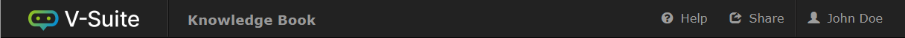

アプリケーションヘッダー
すべてのV-Suite Web アプリケーションには、一般的なアプリケーション機能を提供する共通のヘッダーがあります。

ヘッダーは次の機能を提供します。
私に何ができる？ | 何を期待します |
V-Suiteロゴをクリックします | V-Suite のホームページにジャンプします |
アプリケーション名をクリックします | アプリケーションのメインページにジャンプします |
「ヘルプ」アイコンをクリックします | アプリケーションのヘルプ メニューを開きます。 |
共有アイコンをクリックします | 受信 URL をコピーまたは電子メールで送信します。 ページのコンテンツをエクスポートします。 ページのコンテンツを印刷します。
|
ユーザー名をクリックします | ユーザープロファイルメニューを開きます。 |
すべてのアプリケーションが共有アイコンを提供するわけではありません。 |
指図 | アクション |
このページのヘルプ | 現在のアプリケーション ページに基づいてヘルプ ページを開きます (コンテキスト依存ヘルプ)。 |
お問い合わせ | 「お問い合わせ」のヘルプページを開きます。 |
だいたい | 「概要」ページを開きます。 |
ユーザープロフィール
[ユーザー プロファイル] メニューでは、現在サインインしているユーザーのプロファイルに関連する設定とアクションにアクセスできます。
私に何ができる？ | 何を期待します |
「マイアカウント」をクリックします | 「マイアカウント」フォームを開きます。 |
「サインアウト」をクリックします | 現在のユーザーがV-Suiteからサインアウトできるようにします。 |
「ロケール」→「環境設定」をクリックします。 | 「ロケール設定」フォームを開きます。 |
マイアカウントフォーム
[マイ アカウント] フォームには、 V-Suiteユーザー アカウントに関する詳細情報が表示されます。
[パスワードの変更]ボタンをクリックすると、 V-Suiteユーザー アカウントのパスワードを変更できるフォームが表示されます。パスワードを変更するには、次の情報を入力する必要があります。
- 古いパスワード - V-Suiteアカウントの古いパスワード
- 新しいパスワード - V-Suiteアカウントの新しいパスワード。パスワードはパスワードの複雑さの設定を満たしている必要があります。
- 新しいパスワードの確認 - 確認のため、希望の新しいパスワードを再度入力します。
パスワード情報の入力が完了したら、 「変更」ボタンをクリックするとパスワードが変更されます。 [キャンセル]をクリックすると、パスワード変更要求をキャンセルできます。
ロケール設定フォーム
[ロケール設定] フォームをV-Suite Web アプリケーションの言語、日付、および時刻の設定を行うことができます。
- 言語 - V-Suite Webアプリケーションの優先言語を選択します。
- 対応言語：英語、中国語（簡体字）、日本語
- デフォルトのままにすると、Web ブラウザの言語設定が言語の決定に使用され、優先する Web ブラウザの言語がV-Suite Web でサポートされる言語のリストにない場合には英語が選択されます。
- 日付パターン - 日付の表示方法を選択します。
- 使用可能な日付パターンの選択は、選択した言語に基づいて制限されます。
- 時間パターン - 時間の表示方法を選択します。
- 利用可能な時間パターンの選択は、選択した言語に基づいて制限されます。
- タイムゾーン - 日付と時刻の値を表示するときに使用するタイムゾーンを構成します。
- Defaultのままにすると、マシンのローカル タイム ゾーンが使用されます。
ロケール設定の構成が完了したら、 「保存」ボタンをクリックして新しい選択を確認します。 [キャンセル]をクリックして変更をキャンセルすることもできます。